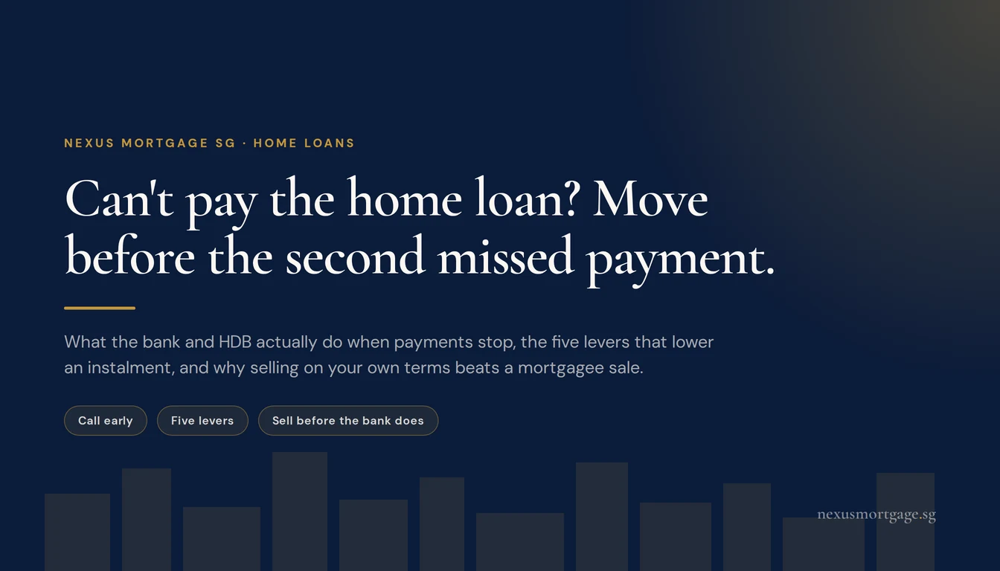
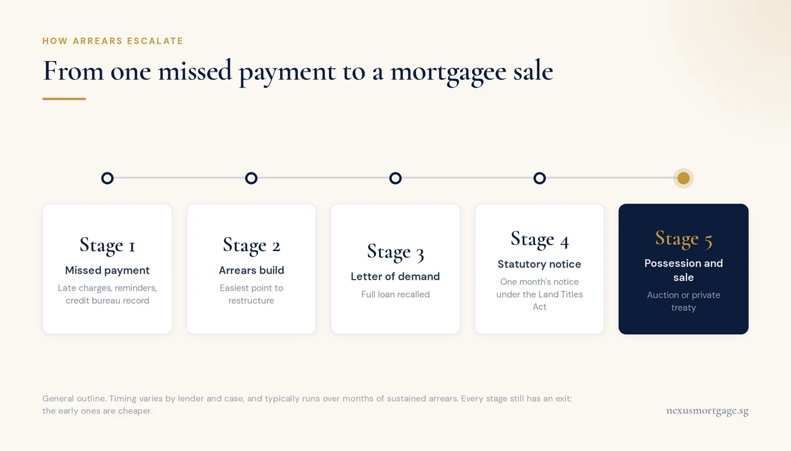
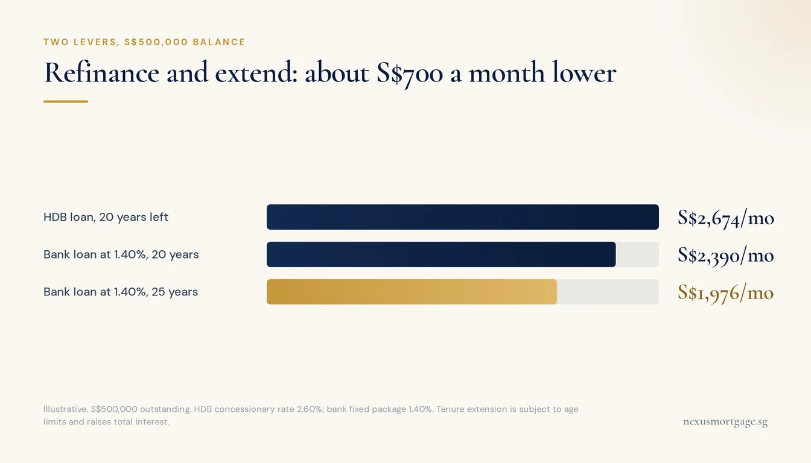

Can't Pay Your Home Loan? What Happens, and What to Do First

One missed payment will not cost you your home. Months of arrears can. If you can see trouble coming, call your bank or HDB before the second missed payment, because every option is cheaper and wider while your record is clean. The levers, in rough order: refinance or reprice to a lower rate, extend the tenure, use CPF Ordinary Account savings, ask for a temporary reduction or deferment (HDB has formal schemes for this), and add income by renting out a room. If none of that closes the gap, selling on your own terms beats a mortgagee sale by a wide margin.
Most of what gets written about mortgage default is either a legal essay or a scare story. This is neither. It is the sequence as it actually runs in Singapore, and the options that exist at each point, written for someone who has just done the arithmetic on next month and does not like the answer.
What Actually Happens When You Miss Payments

Your leverage is strongest at stage one, before anything formal has happened.
The process is slow, it is staged, and at almost every stage there is still a way out. The later the stage, the fewer and more expensive the exits.
- The first missed payment. The bank charges late interest or a late fee and sends a reminder. The missed payment is reported to the credit bureau, where future lenders will see it.
- Arrears build. Further reminders and calls from the bank's collections team. This is the stage where a restructuring conversation is easiest, because nothing formal has happened yet.
- Letter of demand. If arrears persist, the bank's solicitors write demanding the full outstanding loan, not just the arrears. The loan has been recalled.
- Statutory notice. The Land Titles Act requires the bank to give one month's notice of its intention to exercise its power to take possession.
- Possession and sale. After the notice expires, the bank can take possession and sell the property by auction or private treaty. If occupants do not leave, the bank applies to court for possession.
- The shortfall. If the sale does not cover the loan plus the bank's costs, the balance remains your personal debt. An unpaid debt of S$15,000 or more can ground a bankruptcy application.
From first missed payment to sale is usually measured in months, not weeks, and banks generally prefer an arrangement that gets them repaid to the cost and delay of a mortgagee sale. That is your leverage, and it is strongest at stage one.
The First Call to Make, and Why Timing Matters
The instinct is to wait and hope next month is better. It is the wrong instinct, for a specific reason: your options depend on your credit record, and your credit record starts deteriorating with the first missed payment.
The clearest example is refinancing. Moving to a cheaper loan with a different bank is one of the most powerful ways to cut an instalment, and for an owner-occupied home the refinance is not subject to TDSR. But the new bank will run a credit check. A borrower with a clean record and a looming problem can refinance. A borrower already three months in arrears, in practice, cannot.
So the order matters. If you can see trouble coming, whether from a retrenchment notice, a medical diagnosis or a lock-in about to expire onto a much higher rate, act while every door is still open. Call your current lender, explain the situation plainly, and ask what they can do. Then, separately, find out what the rest of the market would offer you.
Five Levers That Lower the Instalment

Refinancing needs a clean credit record. Do it before arrears, not after.
These are the options the banking industry itself points borrowers to. None is free. All are cheaper than arrears.
1. Refinance or reprice to a lower rate. If your package has rolled onto a high thereafter rate, or you are on an older loan, the gap to today's market can be large. The lowest two-year fixed packages we track start around 1.40%. Inside a lock-in you may face a penalty, but it is worth asking the bank to waive it. Our guide to repricing versus refinancing covers which route suits which situation.
2. Extend the tenure. If your loan is not already at the maximum tenure for your age and property, stretching it lowers the monthly instalment. You pay more interest in total, so treat it as a tool for a hard period rather than a free saving.
3. Use CPF Ordinary Account savings. If you have OA savings you have not been using for the loan, you can apply through CPF's e-service to use them for instalments and arrears, within CPF's limits. Only the OA can be used for housing; the Special, MediSave and Retirement Accounts cannot. If you are nearing 55, you can ask CPF to reserve OA savings from the sweep into your Retirement Account so they stay available for the loan.
4. Ask for a temporary arrangement. Banks can agree to arrears being repaid over time, or to a temporary restructuring. These are negotiated, not guaranteed, and they are far easier to get before a letter of demand than after one.
5. Add income from the home. Renting out a spare room or, where rules allow, the whole flat can close a gap. HDB flats need HDB's approval to rent out bedrooms or the whole flat, and the minimum occupation period must be met before the whole flat can be let.
Here is what the first two levers can do together, on a S$500,000 balance with 20 years left:
| Loan | Rate | Years left | Monthly instalment |
|---|---|---|---|
| As is: HDB concessionary loan | 2.60% | 20 | S$2,674 |
| Refinanced to a bank fixed package | 1.40% | 20 | S$2,390 |
| Refinanced and tenure extended | 1.40% | 25 | S$1,976 |
That is about S$700 a month, or a quarter of the instalment, without selling anything. The extension depends on your age: the combined age and tenure limits in our TDSR and MSR guide apply. The refinance from an HDB loan comes with a trade-off that the next section explains.
If Your Loan Is From HDB
An HDB concessionary loan costs more than most bank packages today. But it comes with something bank loans do not: formal hardship measures.
- Arrears by instalments. HDB can let you repay arrears in instalments over a reasonable period.
- Reduce or defer instalments. For a continuous six-month period. Interest keeps accruing on the balance throughout.
- Homeowner Job Support. HDB has piloted a scheme for owners who have lost their job: instalments are reduced or deferred and mortgage interest is suspended for a continuous 12 months, provided you work with a Workforce Singapore or e2i career coach on an employment plan. Ask your HDB branch whether it is open to you.
- Adding a co-owner. An adult child can join the flat and help service the loan from their own CPF. There are real consequences for their own future housing eligibility, so take advice before doing it.
This is the trade-off in the table above. Refinancing from HDB to a bank is one-way: you cannot move a bank loan back to HDB later. If your income is secure and the rate gap is what is hurting, the bank package usually wins, and our HDB-to-bank refinancing guide works through the savings. If your job itself is the risk, the HDB safety net may be worth more than the interest you would save. Make that call deliberately, not by default.
When Insurance Pays, and When It Does Not
If the cause is death, terminal illness or total permanent disability of a borrower, check your mortgage insurance before anything else.
- Home Protection Scheme. Covers HDB flat owners paying with CPF up to age 65, or until the loan is paid, whichever is earlier. On a valid claim, CPF settles the outstanding loan, up to the insured sum, directly with the lender.
- Private mortgage insurance. If the policy was assigned to the bank, the insurer pays the bank directly. If not, it pays the policyholder or beneficiaries, who then repay the loan.
What these policies generally do not cover is job loss. Unemployment is the most common reason people fall behind, and it is the one reason mortgage insurance almost never pays for. Our guide to mortgage insurance in Singapore covers what each type does cover.
Selling on Your Terms, Not the Bank's
Sometimes the arithmetic does not close, however the loan is restructured. When that is the honest answer, the decision that protects you most is to sell before the bank does.
- Price. An owner-led sale on the open market, marketed properly, usually achieves more than a mortgagee sale, where buyers expect a discount.
- Costs. A mortgagee sale adds the bank's legal and enforcement costs to what you owe. An owner-led sale avoids most of them.
- Control. You choose the timing and your next home, rather than working to the bank's timetable.
- The CPF refund. Sale proceeds first repay the loan, then refund the CPF you used plus accrued interest. If the property is sold at market value and the proceeds fall short, CPF does not require you to top up the refund in cash. Our CPF accrued interest guide shows how the refund is calculated.
Two constraints to know. An HDB flat generally cannot be sold on the open market before its minimum occupation period ends, so an early exit needs HDB's agreement. And if the sale leaves a shortfall on the loan, that balance is still yours to repay, so agree a repayment plan for it with the bank as part of the sale rather than after it.
If you need to sell one property and buy a smaller one, the timing between the two can be bridged. Our bridging loan guide covers how.
Where to Get Help Beyond the Loan
A mortgage problem is rarely only a mortgage problem. If other debts are part of it, or day-to-day expenses have become hard to meet, these organisations are there for exactly that:
- Credit Counselling Singapore for multiple unsecured debts, including facilitated repayment arrangements with creditors: ccs.org.sg, 6225 5227.
- Social Service Offices and Family Service Centres for financial assistance with basic living expenses and family support: ComCare hotline 1800-222-0000.
- Job search support through the employment support guide on the LifeSG app, including career coaching.
And for the loan itself: we will look at your situation, show you what the market would offer you today, and tell you plainly whether refinancing helps or whether a different route is better. There is no fee for that conversation, and nothing you tell us obliges you to do anything.
Frequently Asked Questions
One missed payment on its own does not put your home at risk. The bank charges late interest or a late fee, sends reminders, and reports the missed payment to the credit bureau. The risk rises as arrears build over several months, when the bank can recall the loan and begin the statutory process towards a mortgagee sale. Call the bank before the second missed payment.
Yes, as a last resort. After a default the bank can demand the full outstanding loan, and after one month's statutory notice under the Land Titles Act it can take possession and sell by auction or private treaty. This takes months of sustained arrears, and banks generally prefer a workable arrangement or an owner-led sale.
Arrears by instalments, a reduction or deferment of instalments for a continuous six months with interest still accruing, and a Homeowner Job Support pilot for unemployed owners that suspends interest for up to 12 months while they work with a career coach. Ask your HDB branch early.
Often, yes, from the Ordinary Account, through CPF's e-service and within CPF's usage limits. Other CPF accounts cannot be used for housing. Near 55, you can ask CPF to reserve OA savings for the loan.
Usually, if your loan is not already at the maximum tenure for your age and property. It lowers the instalment but raises the total interest. On S$500,000 at 1.40%, going from 20 to 25 years cuts the instalment from about S$2,390 to about S$1,976.
Generally not. HPS and most private mortgage policies pay on death, terminal illness or total permanent disability. Under HPS, CPF settles the outstanding loan up to the insured sum directly with the lender.
Almost always. An owner-led sale usually achieves a better price, avoids enforcement costs and keeps you in control of timing. Any loan shortfall is still owed. If sold at market value, CPF does not require a cash top-up of a shortfall in the CPF refund.
Further reading
- Repricing vs refinancing: the fastest way to a lower instalment while your record is clean
- Refinancing from HDB to a bank loan: the savings, and the safety net you give up
- Mortgage insurance: MRTA, HPS and term: what each one actually pays for
- CPF accrued interest on a sale: what comes back to your CPF, and what reaches your pocket
- Today's mortgage rates: fixed and floating packages across 16 banks
This article is general information for Singapore homeowners. It is not financial or legal advice, and it is not an offer of credit. The enforcement sequence described is a general outline; the terms of your own mortgage and your lender's practices govern what happens in your case, and you should take legal advice if you receive a letter of demand. HDB's assistance measures and the Homeowner Job Support pilot are administered by HDB, and availability and conditions may change. Instalment figures are illustrative and assume a S$500,000 balance at the rates and tenures shown; rates reflect packages tracked by Nexus Mortgage as at late September 2026. Tenure extensions are subject to age and property limits. Sources: Association of Banks in Singapore: Managing housing loan arrears, HDB: Financial assistance measures, CPF: Home ownership, Land Titles Act 1993.

About the author — Dan Ler has advised on Singapore home loans since 2017 at Nexus Mortgage SG, an independent brokerage comparing 16+ MAS-regulated lenders. Nexus has facilitated 500+ home loans across HDB, EC, private condo and landed property segments. Banks pay Nexus on disbursement, so there is no cost to the borrower.